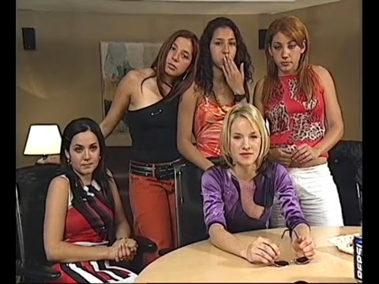
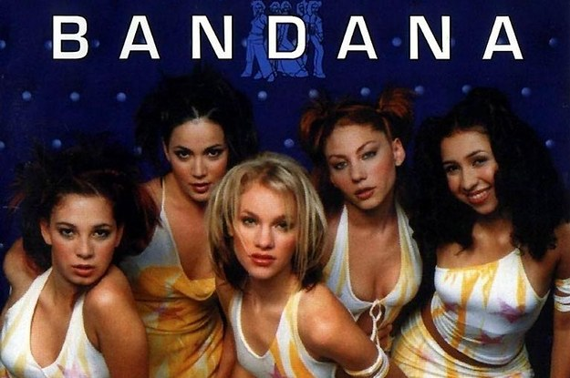
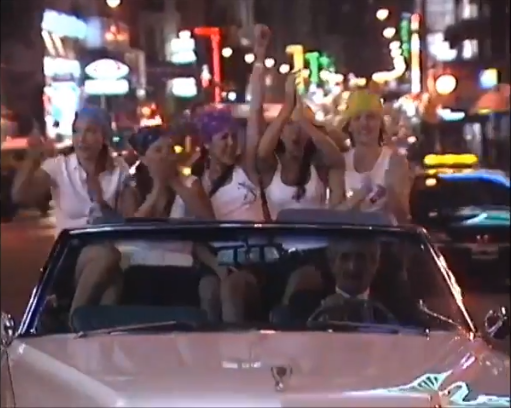

Bandana
La girlband más conocida de América Latina
Línea temporal de Bandana
- 2001 - PopStar lanza una audición en Buenos Aires en busca de jóvenes que integren una girlband. Las chicas pasan los castings y se crea Bandana.
- 2002 - Lanza su primer álbum, "Bandana", el cual rompe récords en todo el mundo.
- 2003 - Protagonizan la película "Vivir intentando".
- 2004 - Ganan su primer Grammy a mejor canción por "Muero de amor".
- 2006 - Lourdes sufre un accidente con un helado de frutos del bosque que la lleva a una operación de garganta muy riesgosa. La girlband toma un receso.
- 2007 - Vuelve del receso, pero surgen rumores de querer echar a Virginia, los cuales terminan siendo ciertos. Más tarde Ivonne también deja el grupo para ser cantante de una orquesta.
- 2008 - La banda se disuelve completamente.
Galería de momentos icónicos

Las integrantes de la banda son seleccionadas

Su primer disco "Bandana" rompe récords en ventas
Lourdes hospitalizada por la operación de garganta

Las chicas en camino a su presentación en el Teatro Gran Rex
Virginia se entera que los productores la quieren sacar de Bandana
Bandana se reune dando una presentación en ShowMatch